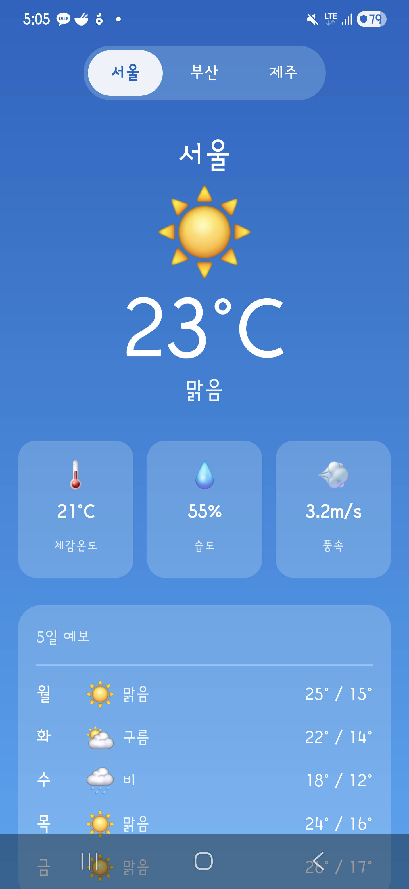
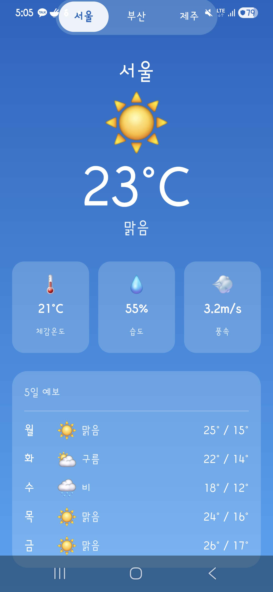
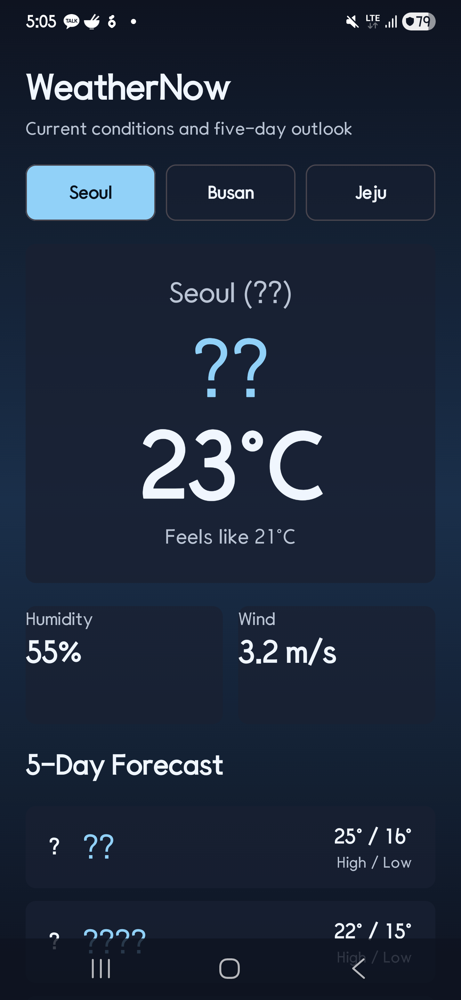
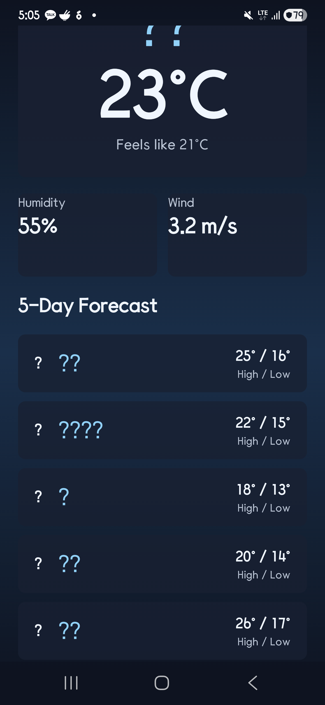
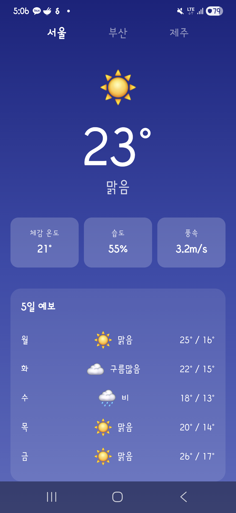
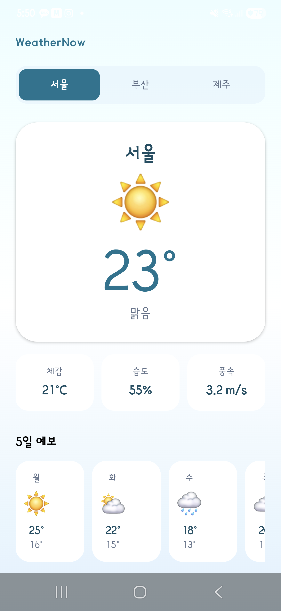

WeatherNow V1 초기 생성 비교
동일한 스펙을 Claude·Codex·Gemini·Cursor 4개 AI에 전달해 Android 날씨 앱을 처음부터 생성했습니다. 각 AI는 서로 다른 아키텍처 구조와 UI 방향을 선택했고, Codex는 한국어 도시명(서울·부산·제주)이 깨지는 인코딩 버그가 발생했습니다(V2에서 스스로 수정).
실험 개요
초기 코드 없이 같은 스펙을 네 AI에게 줬을 때 누가 어떤 선택을 하는지 관찰했습니다. 기능보다는 설계 판단 — 파일을 어떻게 나눴는지, 한국어를 올바르게 처리했는지, 빌드까지 완결했는지에 주목합니다.
실험 프롬프트
Build a complete Android weather app project in the current directory based on the following specification. Create ALL necessary files including build.gradle, settings.gradle, AndroidManifest.xml, and all Kotlin source files.
---
# Weather App Specification
## Tech Stack (Fixed — do not change)
- Language: Kotlin
- UI: Jetpack Compose (안드로이드 UI 프레임워크)
- Architecture: MVVM (화면·로직 분리 아키텍처 패턴) (ViewModel + UiState)
- minSdk: 26 (지원하는 최소 안드로이드 버전)
- targetSdk: 35 (대상 안드로이드 버전)
- No external libraries (standard Compose + ViewModel only)
- No real API — Mock data(테스트용 가짜 데이터) only
- App name: WeatherNow
- Package name: com.example.weathernow
## Required Features
### Screens
- Single main screen (single Activity + Compose)
### Information to display
1. City name
2. Current temperature (°C)
3. Weather condition (맑음, 흐림, 비, 눈, etc.)
4. Feels like temperature
5. Humidity (%)
6. Wind speed (m/s)
7. 5-day forecast (day + weather icon + high/low temp)
### Functionality
- City switching: Seoul(서울), Busan(부산), Jeju(제주) — tabs or selector UI
- Weather icons: use emoji or draw with Compose (no external image resources)
## Mock Data (use exactly as provided)
```kotlin
data class WeatherData(
val city: String,
val currentTemp: Int,
val feelsLike: Int,
val condition: String,
val humidity: Int,
val windSpeed: Double,
val forecast: List<ForecastDay>
)
data class ForecastDay(
val day: String,
val condition: String,
val high: Int,
val low: Int
)
val mockWeatherList = listOf(
WeatherData(
city = "서울",
currentTemp = 23,
feelsLike = 21,
condition = "맑음",
humidity = 55,
windSpeed = 3.2,
forecast = listOf(
ForecastDay("월", "맑음", 25, 16),
ForecastDay("화", "구름많음", 22, 15),
ForecastDay("수", "비", 18, 13),
ForecastDay("목", "흐림", 20, 14),
ForecastDay("금", "맑음", 26, 17)
)
),
WeatherData(
city = "부산",
currentTemp = 26,
feelsLike = 28,
condition = "구름많음",
humidity = 72,
windSpeed = 5.1,
forecast = listOf(
ForecastDay("월", "구름많음", 27, 20),
ForecastDay("화", "비", 24, 19),
ForecastDay("수", "비", 22, 18),
ForecastDay("목", "맑음", 25, 19),
ForecastDay("금", "맑음", 28, 21)
)
),
WeatherData(
city = "제주",
currentTemp = 28,
feelsLike = 30,
condition = "맑음",
humidity = 68,
windSpeed = 6.8,
forecast = listOf(
ForecastDay("월", "맑음", 29, 22),
ForecastDay("화", "맑음", 30, 23),
ForecastDay("수", "구름많음", 27, 21),
ForecastDay("목", "비", 24, 20),
ForecastDay("금", "흐림", 25, 21)
)
)
)
```
## UI Requirements
### Free to decide (show your AI's design style)
- Color theme and background
- Layout composition
- Weather icon style
- Animations (optional)
- Card/section design
- Font sizes and hierarchy
### Must follow
- All information on one scrollable screen
- City switching UI must be included
- 5-day forecast shown as horizontal or vertical list
- Consistent dark or light theme throughout
## Required Project Structure
```
app/
build.gradle.kts
src/main/
AndroidManifest.xml
java/com/example/weathernow/
MainActivity.kt
WeatherViewModel.kt
WeatherData.kt
ui/
WeatherScreen.kt
components/ (reusable composables)
res/values/
strings.xml
themes.xml
build.gradle.kts
settings.gradle.kts
gradle/wrapper/
gradle-wrapper.properties
```
## Done criteria
- ./gradlew assembleDebug (안드로이드 앱 빌드 명령어) builds successfully
- App runs on physical device via ADB (안드로이드 기기 연결 도구)
- 3 cities switch correctly
- 5-day forecast displays
- No crashes
종합 비교
| 항목 | Claude | Codex | Gemini | Cursor |
|---|---|---|---|---|
| 모델 | claude-sonnet-4-6 (Claude Code CLI v2.1.152) | gpt-5.5 (OpenAI Codex CLI v0.134.0) | gemini-3-flash-preview + gemini-3.1-flash-lite (Gemini CLI v0.43.0) | auto (Cursor Agent) |
| 소요 시간 | 537초 (약 9분) | 457초 (약 8분) | 318초 (약 5분) ★최단 | 360초 (약 6분) |
| 총 사용 토큰 | 918,278 | 165,761 ★최소 | 672,522 | 1,170,000 ★최대 |
| Kotlin 파일/라인 | 5개 / 395줄 | 6개 / 451줄 | 5개 / 304줄 ★최소 | 7개 / 473줄 ★최대 |
| 빌드 | 성공 (gradlew 수동 보완 후) | 성공 (자동 APK 빌드 포함) | 성공 (mipmap 수동 보완 후) | 성공 |
| 실기기 검증 | 스크린샷 촬영 완료 | 스크린샷 촬영 완료 | 스크린샷 촬영 완료 | ADB 스크린샷 자동 촬영 |
| UI 테마 | 라이트 — 하늘색 그라데이션 | 다크 — 네이비 계열 (4개 중 유일한 다크) | 라이트 — 인디고/보라 그라데이션 | 라이트 — 청록(teal) 그라데이션 |
| 한국어 표시 | 정상 | 깨짐 — stdin(표준 입력 스트림) 파이프로 프롬프트 전달 시 UTF-8 인코딩이 손실되어 서울·부산·제주가 모두 물음표로 표시됨. V2에서 자가 수정. | 정상 | 정상 |
토큰 사용량
총 918,278 토큰 중 865,307 토큰(94%)이 캐시에서 재사용됐습니다. 프롬프트 캐싱(Prompt Caching) — 이전 대화 맥락을 서버에 저장해 두고 반복 전송 없이 재사용하는 Claude 기능 — 덕분에 실제 과금은 겉보기 숫자보다 훨씬 적습니다. 캐시 재사용 토큰은 일반 입력 토큰 대비 약 10배 저렴하게 과금됩니다.
4개 AI 중 가장 적은 토큰을 사용했습니다. Codex CLI는 내부적으로 입력/출력을 분리하지 않고 총 사용 토큰만 외부에 노출합니다. 상세 분류 데이터를 얻을 수 없어 캐싱 여부를 확인하기 어렵습니다.
Gemini CLI는 요청마다 어떤 모델을 쓸지 결정하는 라우터 모델(gemini-3.1-flash-lite)과 실제 코드를 생성하는 메인 모델(gemini-3-flash-preview) 두 가지를 동시에 사용합니다. 측정값은 기존 프로젝트에서 재측정한 수치이므로, 최초 생성 시 출력 토큰은 이보다 더 많았을 수 있습니다.
4개 AI 중 가장 많은 토큰을 사용했습니다. Cursor Usage 대시보드 기준으로 3개 대화 세션(15.3만 + 9.6만 + 92.1만)을 합산한 수치입니다. 입·출력 분리는 제공되지 않습니다. "$0.48 (Included)"는 구독 플랜의 무료 한도 안에서 처리된 비용으로, 추가 청구는 발생하지 않았습니다.
실행 화면
각 앱을 실제 기기에 설치한 뒤 상단, 중간, 하단 스크롤 위치를 동일한 방식으로 캡처했습니다.







구현 관찰 — AI별 선택과 그 의미
| AI | UI 테마 | 주요 UI 구성 | 주목할 동작 및 의미 |
|---|---|---|---|
| Claude | 라이트 — 하늘색 그라데이션 | 날씨 상태에 따라 배경 색상이 동적으로 바뀌는 그라데이션, 체감·습도·풍속을 카드 3개로 구분, 5일 예보 세로 리스트 | gradlew 실행 파일을 생성하지 않아 첫 빌드 시 수동 보완이 필요했습니다. 스펙 준수는 정확했지만, "빌드까지 자동 완결"이 되지 않은 유일한 단계가 여기서 발생했습니다. |
| Codex | 다크 — 네이비 계열 (4개 중 유일한 다크 테마) | WeatherNow 앱 이름 헤더, 체감온도(Feels like) 별도 표시, 5일 예보 세로 리스트 | 코드 생성을 마친 뒤 사람이 요청하지 않았는데도 스스로 gradlew assembleDebug(안드로이드 앱 빌드 명령어)를 실행해 APK(안드로이드 앱 설치 파일)를 빌드했습니다. 4개 AI 중 "생성 → 빌드"를 한 번에 완결한 유일한 도구입니다. 단, 한국어 도시명은 stdin 파이프 인코딩 문제로 깨졌습니다. |
| Gemini | 라이트 — 인디고/보라 그라데이션 | 심플한 단일 컬럼 레이아웃, 카드형 날씨 상세 정보, 5일 예보 세로 리스트 | 빌드는 완료했으나 앱 아이콘 이미지(mipmap: 안드로이드 앱 아이콘·이미지 리소스 폴더)를 생성하지 않아 빌드 스크립트에 참조만 남아 있었습니다. 직접 리소스 파일을 추가하는 수동 보완이 필요했습니다. 가장 적은 코드(304줄)로 요구사항을 충족했습니다. |
| Cursor | 라이트 — 청록(teal) 그라데이션 | 체감·습도·풍속을 작은 칩(Chip) 3개로 표시, 5일 예보를 가로 스크롤 카드로 배치 | Cursor는 IDE Agent 방식으로 동작합니다 — 터미널 CLI가 아니라 IDE 내 대화창에서 코드를 생성하고 바로 편집기에 적용합니다. gradlew assembleDebug 빌드와 ADB(안드로이드 기기 연결 도구)를 통한 스크린샷 촬영까지 세션 안에서 자동 수행했습니다. |
코드 요약 — 파일 분리 방식과 코드량
파일 수와 줄 수는 단순 코드량이 아니라 각 AI가 책임을 어떻게 나눴는지를 보여줍니다. 파일이 많을수록 역할을 세분화한 것이고, 줄 수가 적을수록 간결하게 해결한 것입니다.
| AI | Kotlin 파일 수 | Kotlin 총 라인 | 특이사항 |
|---|---|---|---|
| Claude | 5개 | 395줄 | 스펙에서 요구한 파일 구조를 그대로 따름. UI 컴포넌트를 components/ 하위로 분리해 재사용성을 고려한 구조. |
| Codex | 6개 | 451줄 | 스펙 요구 파일 외 별도 파일을 1개 추가해 기능을 분리. 한국어 인코딩 버그로 도시명이 깨진 채로 생성됨. |
| Gemini | 5개 | 304줄 (4개 중 최소) | 가장 적은 코드로 모든 요구사항을 충족. 불필요한 추상화 없이 직관적인 단일 화면 구조로 구현. |
| Cursor | 7개 (4개 중 최대) | 473줄 (4개 중 최대) | 파일을 가장 세분화했고 코드량도 가장 많음. 5일 예보를 가로 스크롤로 구현하는 등 UI 컴포넌트가 더 세분화돼 파일·줄 수가 늘어난 것으로 보임. |